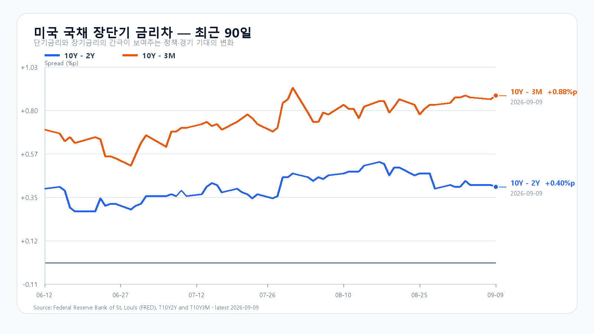
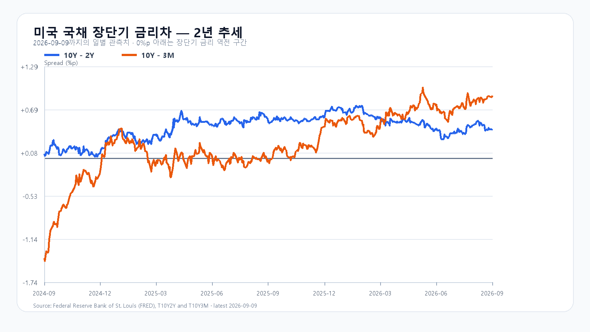

유가가 다시 100달러를 넘자 미국 증시는 일제히 밀렸다. 9월 9일 S&P500은 0.5%, Nasdaq은 0.6% 내렸고 10년물 국채금리는 4.84%까지 올랐다. 장기금리와 유가가 함께 오르는 날에는 반도체의 밸류에이션과 한국의 수입물가가 동시에 부담을 받는다.
그렇다고 미국장의 하락을 그대로 서울에 옮겨 적기는 어렵다. 전날 KOSPI는 7,051.64로 1.40% 올랐고 KODEX 레버리지는 3.06% 상승했다. SK하이닉스는 정규장에서 3.51% 올랐고, 장전 NXT에서도 1.45% 강세를 유지했다. 반면 삼성전자는 NXT에서 0.37% 내렸다. 미국에서 Nvidia와 Broadcom이 약세였지만 SOXX·SMH·AMD·Micron은 버텼다는 점은 반도체 안에서도 일방향 신호가 아니라는 뜻이다.
다만 SK하이닉스 한 종목의 강세를 범용 반도체 수요의 전면 회복으로 읽을 단계는 아니다. TrendForce는 DDR5 현물 조달이 여전히 제한적이라고 짚었다. 반면 DDR4 1Gx8 3200은 한 주 동안 1.78% 올랐고, NAND TLC 웨이퍼는 2.71% 내렸다. 메모리 가격은 품목별로 갈린다. 오늘 장에서도 삼성전자가 반등해 강세가 넓어지는지, 외국인·프로그램 매수가 뒤따르는지를 따로 봐야 한다.
중국의 8월 CPI는 전년 대비 0.8%, PPI는 3.8% 올랐다. 원자재와 제조업 가격의 반등은 중국 수요 측면에서는 긍정적이지만, 지금처럼 유가가 높은 국면에서는 세계 물가와 금리 기대를 다시 자극한다. 원/달러가 1,341.00원으로 전일 대비 0.04% 내린 점은 당장의 완충재다.
오늘의 기본 경로는 KOSPI 7,000~7,150이다. SK하이닉스의 장전 강세가 정규장으로 이어지고 삼성전자도 반등해 7,000을 지키면 7,150 위를 시험할 수 있다. 반대로 유가와 장기금리 부담이 반도체 매도로 번지거나 외국인·프로그램 수급이 함께 돌아서면 7,000 아래의 변동성이 커진다. KODEX 레버리지는 112,500원을 첫 지지선으로, 115,000원 회복 여부와 전일 고점 117,925원 부근을 차례로 확인할 가격대다.
오늘 밤 21시 30분 KST에는 미국 8월 PPI가 나온다. 다음 날 같은 시각 CPI, 9월 15~16일에는 FOMC가 이어진다. SK하이닉스의 강세가 이어져도 이 일정 전의 급등은 유가·금리 변수와 함께 읽어야 한다.
장전 가격
| 항목 | 가격·변화 | 출처 기준 시각 |
|---|---|---|
| 삼성전자 NXT | 268,500원 · -0.37% | 9월 10일 08:24:41 KST 조회 |
| SK하이닉스 NXT | 1,883,000원 · 1.45% | 9월 10일 08:24:41 KST 조회 |
| 달러/원 하나은행 고시 | 1,341.00원 · -0.04% | 2026-09-10T07:22:45+09:00 |
| Nasdaq100 선물 | 29,422.25 · -0.090% | 2026-09-10T08:14:34+09:00 지연 시세 |
| S&P500 선물 | 7,646.50 · +0.036% | 2026-09-10T08:14:28+09:00 지연 시세 |
| 브렌트 선물 | 102.07 · +0.850% | 2026-09-10T08:14:37+09:00 지연 시세 |
| WTI 선물 | 97.08 · +1.072% | 2026-09-10T08:14:37+09:00 지연 시세 |
NXT · 환율 · Nasdaq100 선물 · S&P500 선물 · 브렌트 · WTI
NXT는 정규장과 별도 시장이고 선물은 지연 시세다.

